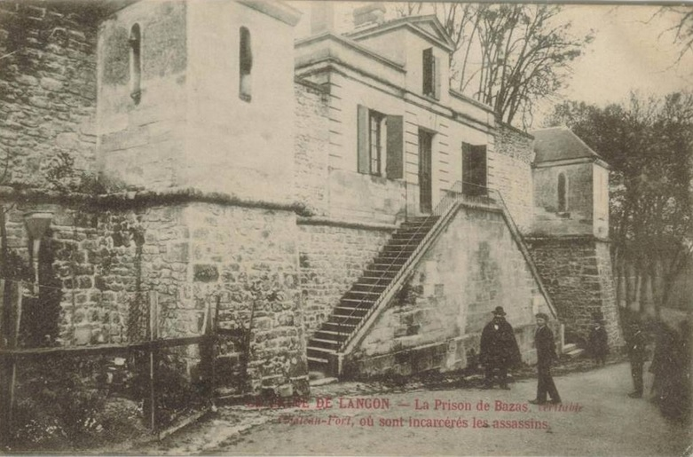
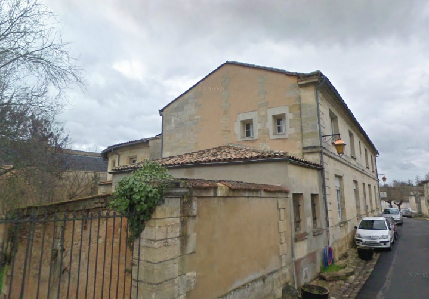
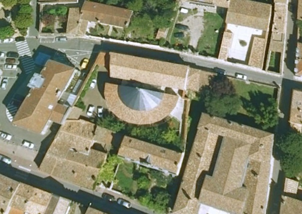
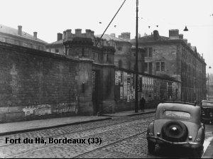
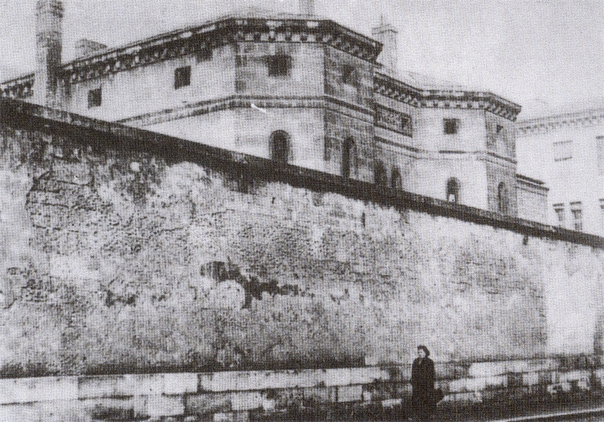
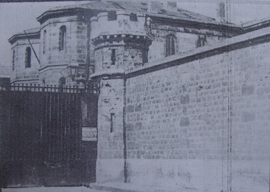
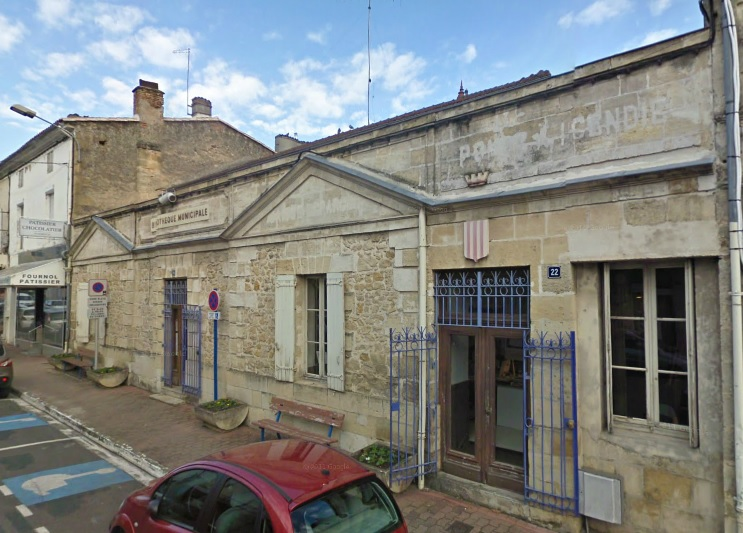
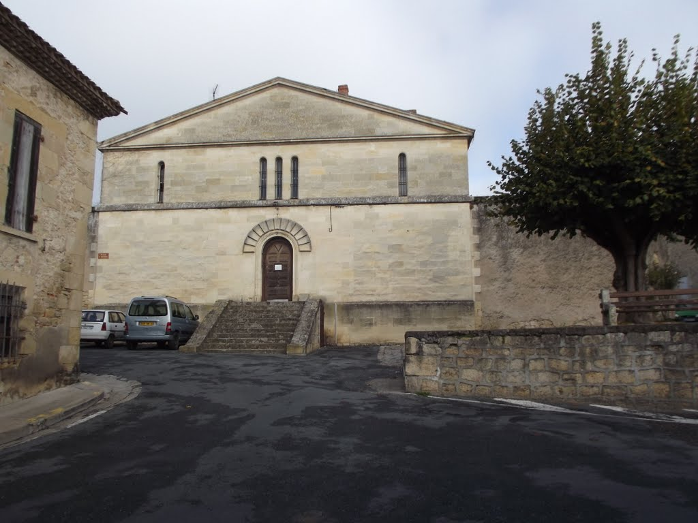
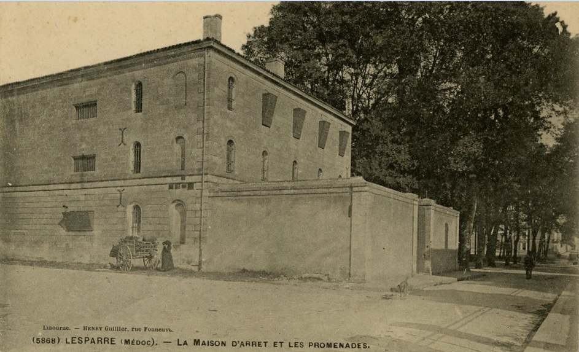
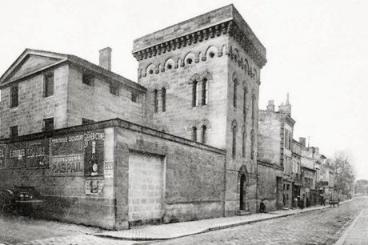

| Département | Images | Ville | Nom | Adresse | Période | Capacité | Histoire du lieu | Nombre d'exécutions |
| Gironde (33) |  |
Bazas | Maison d'arrêt | Rue Théophile de Servière | -1926 | Aucune exécution | ||
| Gironde (33) |   |
Blaye | Maison d'arrêt | 2, rue de la Libération | 1831-1926 | Les anciennes prisons de Blaye se trouvaient, évidemment, dans la citadelle, mais au début du XIXe siècle, on décide de doter la ville d'une vraie maison d'arrêt. Le décret de sa construction paraît le 11 mars 1828. Simple bâtiment de forme rectangulaire, à un étage, la prison doit, en 1848 être agrandie : on y adjoint un second bâtiment en forme de demi-cercle. Devenu bains-douches municipaux de 1941 jusqu'en 1960, le bâtiment est laissé à l'abandon avant d'être racheté par le conseil général, qui y installe un centre médico-social. | Aucune exécution | |
| Gironde (33) |    |
Bordeaux | Fort du Hâ | 11, rue du Maréchal-Joffre | 1731-1967 | 317 places, 89 surveillants (en 1962) | A la fin de la guerre de Cent Ans, Charles VII ordonne la construction d'un château bordelais, le Far, destiné à prévenir toute prochaine attaque britannique. Les travaux sont lancés en 1456. En 1470, devenu pour tous le "Hâ", déformation de son nom d'origine, le château, qui abritait jusqu'alors des troupes, devient la maison du duc de Guyenne, frère du nouveau roi Louis XI. Théâtre de nombreux massacres et autres évènements, le fort devient prison en 1731. A la Révolution, on songe faire subir au Hâ le sort de la Bastille parisienne, mais le nouveau département de la Gironde obtient sa propriété pour continuer à y enfermer ses détenus. Ce n'est qu'un premier sursis : en 1835, on détruit tout, sauf deux tours, Les Anglais et les Minimes, afin de faire place nette pour l'édification d'un nouveau palais de justice et d'une prison digne de ce nom, laquelle est inaugurée le 19 novembre 1846. A partir de 1918, on exécute les condamnés à morts dans une cour qui dessert tant la prison que le tribunal, chose exceptionnelle, puisque, pour respecter les règles de publicité encore en vigueur, on se doit de laisser le portail principal de la prison ouvert ! C'est notamment là qu'en 1941, on guillotinera une femme en France pour la première fois depuis 54 ans. L'Occupation va laisser un goût plus amer encore à la vieille prison, et deux ans après que les tours médiévales eussent été inscrite aux monuments historiques, on décide de la désaffection. Les détenus sont transférés à Gradignan, en banlieue, le 12 juin 1967. Deux années s'écoulent avant que la prison ne soit rasée - à part les tours ancestrales, à jamais survivantes -, et deux autres avant qu'on n'entame les travaux de l'École Nationale de la Magistrature, laquelle est inaugurée en décembre 1972. | Douze exécutions en 1918, 1921, 1926, 1927, 1933, 1941, 1944, 1947, 1949 et 1960. |
| Gironde (33) | Gradignan | Maison d'arrêt | 36, rue du Bourdillat | En service depuis 1967 | Aucune exécution | |||
| A VERIFIER ! Gironde (33) |
 |
Langon | Maison d'arrêt | 20, cours du Maréchal-de-Lattre-de-Tassigny | 1813- | Devenue bibliothèque municipale. | Aucune exécution | |
| Gironde (33) |  |
La Réole | Prison Saint-Michel | Place Saint-Michel | 1845- | Réouverte après le 25 novembre 1941. Devenu un "drive fermier" en septembre 2013 | Aucune exécution | |
| Gironde (33) |  |
Lesparre-Médoc | Maison d'arrêt | 5, rue Gramont | 1833-1960 | Voisine du Palais-de-Justice. Prison fermée en 1926. Institution spéciale de l'Education Surveillée (ISES) pour femmes de 1952 à 1960 : 17 détenues. Bâtiment Groupama. | Aucune exécution | |
| Gironde (33) |  |
Libourne | Maison d'arrêt Jules Ferry | Rue Jules-Ferry | -1952 | Aucune exécution |
{kind=link}
{kind=link}
{kind=link}
{kind=link}
{kind=link}
{kind=link}
{kind=link}
{kind=link}
{kind=link}
{kind=link}